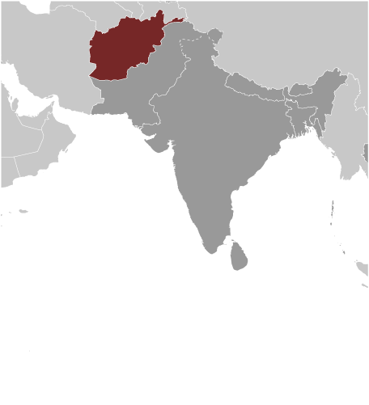
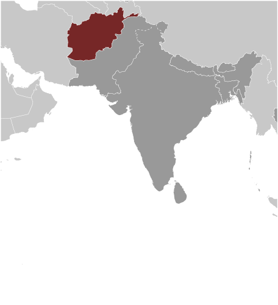

South Asia :: AFGHANISTAN
Introduction :: AFGHANISTAN
-
Ahmad Shah DURRANI unified the Pashtun tribes and founded Afghanistan in 1747. The country served as a buffer between the British and Russian Empires until it won independence from notional British control in 1919. A brief experiment in democracy ended in a 1973 coup and a 1978 communist countercoup. The Soviet Union invaded in 1979 to support the tottering Afghan communist regime, touching off a long and destructive war. The USSR withdrew in 1989 under relentless pressure by internationally supported anti-communist mujahidin rebels. A series of subsequent civil wars saw Kabul finally fall in 1996 to the Taliban, a hardline Pakistani-sponsored movement that emerged in 1994 to end the country's civil war and anarchy. Following the 11 September 2001 terrorist attacks, a US, Allied, and anti-Taliban Northern Alliance military action toppled the Taliban for sheltering Usama BIN LADIN.A UN-sponsored Bonn Conference in 2001 established a process for political reconstruction that included the adoption of a new constitution, a presidential election in 2004, and National Assembly elections in 2005. In December 2004, Hamid KARZAI became the first democratically elected president of Afghanistan, and the National Assembly was inaugurated the following December. KARZAI was reelected in August 2009 for a second term. The 2014 presidential election was the country's first to include a runoff, which featured the top two vote-getters from the first round, Abdullah ABDULLAH and Ashraf GHANI. Throughout the summer of 2014, their campaigns disputed the results and traded accusations of fraud, leading to a US-led diplomatic intervention that included a full vote audit as well as political negotiations between the two camps. In September 2014, GHANI and ABDULLAH agreed to form the Government of National Unity, with GHANI inaugurated as President and ABDULLAH elevated to the newly-created position of chief executive officer. The day after the inauguration, the GHANI administration signed the US-Afghan Bilateral Security Agreement and NATO Status of Forces Agreement, which provide the legal basis for the post-2014 international military presence in Afghanistan.Despite gains toward building a stable central government, the Taliban remains a serious challenge for the Afghan Government in almost every province. The Taliban still considers itself the rightful government of Afghanistan, and it remains a capable and confident insurgent force despite its last two spiritual leaders being killed; it continues to declare that it will pursue a peace deal with Kabul only after foreign military forces depart.
Geography :: AFGHANISTAN
-
Southern Asia, north and west of Pakistan, east of Iran33 00 N, 65 00 EAsiatotal: 652,230 sq kmland: 652,230 sq kmwater: 0 sq kmcountry comparison to the world: 41almost six times the size of Virginia; slightly smaller than Texastotal: 5,987 kmborder countries (6): China 91 km, Iran 921 km, Pakistan 2,670 km, Tajikistan 1,357 km, Turkmenistan 804 km, Uzbekistan 144 km0 km (landlocked)none (landlocked)arid to semiarid; cold winters and hot summersmostly rugged mountains; plains in north and southwestmean elevation: 1,884 melevation extremes: lowest point: Amu Darya 258 mhighest point: Noshak 7,485 mnatural gas, petroleum, coal, copper, chromite, talc, barites, sulfur, lead, zinc, iron ore, salt, precious and semiprecious stones, arable landagricultural land: 58.1%arable land 11.9%; permanent crops 0.2%; permanent pasture 46%forest: 2.1%other: 39.8% (2011 est.)32,080 sq km (2012)populations tend to cluster in the foothills and periphery of the rugged Hindu Kush range; smaller groups are found in many of the country's interior valleys; in general, the east is more densely settled while the south is sparsely populateddamaging earthquakes occur in Hindu Kush mountains; flooding; droughtslimited natural freshwater resources; inadequate supplies of potable water; soil degradation; overgrazing; deforestation (much of the remaining forests are being cut down for fuel and building materials); desertification; air and water pollutionparty to: Biodiversity, Climate Change, Desertification, Endangered Species, Environmental Modification, Marine Dumping, Ozone Layer Protectionsigned, but not ratified: Hazardous Wastes, Law of the Sea, Marine Life Conservationlandlocked; the Hindu Kush mountains that run northeast to southwest divide the northern provinces from the rest of the country; the highest peaks are in the northern Vakhan (Wakhan Corridor)
People and Society :: AFGHANISTAN
-
33,332,025 (July 2016 est.)country comparison to the world: 41noun: Afghan(s)adjective: AfghanPashtun, Tajik, Hazara, Uzbek, other (includes smaller numbers of Baloch, Turkmen, Nuristani, Pamiri, Arab, Gujar, Brahui, Qizilbash, Aimaq, Pashai, and Kyrghyz)note: current statistical data on the sensitive subject of ethnicity in Afghanistan is not available, and ethnicity data from small samples of respondents to opinion polls are not a reliable alternative; Afghanistan's 2004 constitution recognizes 14 ethnic groups: Pashtun, Tajik, Hazara, Uzbek, Baloch, Turkmen, Nuristani, Pamiri, Arab, Gujar, Brahui, Qizilbash, Aimaq, and Pashai (2015)Afghan Persian or Dari (official) 50%, Pashto (official) 35%, Turkic languages (primarily Uzbek and Turkmen) 11%, 30 minor languages (primarily Balochi and Pashai) 4%, much bilingualism, but Dari functions as the lingua francanote: the Turkic languages Uzbek and Turkmen, as well as Balochi, Pashai, Nuristani, and Pamiri are the third official languages in areas where the majority speaks themMuslim 99.7% (Sunni 84.7 - 89.7%, Shia 10 - 15%), other 0.3% (2009 est.)0-14 years: 41.03% (male 6,947,939/female 6,728,983)15-24 years: 22.49% (male 3,816,369/female 3,678,657)25-54 years: 30.01% (male 5,095,905/female 4,907,019)55-64 years: 3.9% (male 640,813/female 660,121)65 years and over: 2.57% (male 396,124/female 460,095) (2016 est.)total dependency ratio: 87%youth dependency ratio: 82.3%elderly dependency ratio: 4.6%potential support ratio: 21.7% (2015 est.)total: 18.6 yearsmale: 18.5 yearsfemale: 18.6 years (2016 est.)country comparison to the world: 2082.34% (2016 est.)country comparison to the world: 3338.3 births/1,000 population (2016 est.)country comparison to the world: 1113.7 deaths/1,000 population (2016 est.)country comparison to the world: 8-1.2 migrant(s)/1,000 population (2016 est.)country comparison to the world: 147populations tend to cluster in the foothills and periphery of the rugged Hindu Kush range; smaller groups are found in many of the country's interior valleys; in general, the east is more densely settled while the south is sparsely populatedurban population: 26.7% of total population (2015)rate of urbanization: 3.96% annual rate of change (2010-15 est.)KABUL (capital) 4.635 million (2015)at birth: 1.05 male(s)/female0-14 years: 1.03 male(s)/female15-24 years: 1.04 male(s)/female25-54 years: 1.04 male(s)/female55-64 years: 0.97 male(s)/female65 years and over: 0.86 male(s)/femaletotal population: 1.03 male(s)/female (2016 est.)20.1note: median age at first birth among women 25-29 (2010 est.)396 deaths/100,000 live births (2015 est.)country comparison to the world: 22total: 112.8 deaths/1,000 live birthsmale: 120.3 deaths/1,000 live birthsfemale: 105 deaths/1,000 live births (2016 est.)country comparison to the world: 1total population: 51.3 yearsmale: 49.9 yearsfemale: 52.7 years (2016 est.)country comparison to the world: 2225.22 children born/woman (2016 est.)country comparison to the world: 1021.2% (2010/11)8.2% of GDP (2014)country comparison to the world: 460.27 physicians/1,000 population (2013)0.5 beds/1,000 population (2012)improved:urban: 78.2% of populationrural: 47% of populationtotal: 55.3% of populationunimproved:urban: 21.8% of populationrural: 53% of populationtotal: 44.7% of population (2015 est.)improved:urban: 45.1% of populationrural: 27% of populationtotal: 31.9% of populationunimproved:urban: 54.9% of populationrural: 73% of populationtotal: 68.1% of population (2015 est.)0.04% (2015 est.)country comparison to the world: 1226,900 (2015 est.)country comparison to the world: 105300 (2015 est.)country comparison to the world: 97degree of risk: intermediatefood or waterborne diseases: bacterial diarrhea, hepatitis A, and typhoid fevervectorborne disease: malaria (2016)2.4% (2014)country comparison to the world: 182NAdefinition: age 15 and over can read and writetotal population: 38.2%male: 52%female: 24.2% (2015 est.)total: 11 yearsmale: 13 yearsfemale: 8 years (2014)total number: 2,082,722percentage: 25.3%note: data on child labor in Afghanistan is uncertain and may be higher than the estimated 25.3% of children ages 5-14 derived from 2010-11 survey results; UNICEF estimated that 30% of children ages 5-14 in 2011 were engaged in child labor (2010/11 est.)
Government :: AFGHANISTAN
-
conventional long form: Islamic Republic of Afghanistanconventional short form: Afghanistanlocal long form: Jamhuri-ye Islami-ye Afghanistanlocal short form: Afghanistanformer: Republic of Afghanistanetymology: the name "Afghan" originally refered to the Pashtun people (today it is understood to include all the country's ethnic groups), while the suffix "-stan" means "place of" or "country"; so Afghanistan literally means the "Land of the Afghans"presidential Islamic republicname: Kabulgeographic coordinates: 34 31 N, 69 11 Etime difference: UTC+4.5 (9.5 hours ahead of Washington, DC, during Standard Time)34 provinces (welayat, singular - welayat); Badakhshan, Badghis, Baghlan, Balkh, Bamyan, Daykundi, Farah, Faryab, Ghazni, Ghor, Helmand, Herat, Jowzjan, Kabul, Kandahar, Kapisa, Khost, Kunar, Kunduz, Laghman, Logar, Nangarhar, Nimroz, Nuristan, Paktika, Paktiya, Panjshir, Parwan, Samangan, Sar-e Pul, Takhar, Uruzgan, Wardak, Zabul19 August 1919 (from UK control over Afghan foreign affairs)Independence Day, 19 August (1919)several previous; latest drafted 14 December 2003 - 4 January 2004, signed 16 January 2004, ratified 26 January 2004 (2016)mixed legal system of civil, customary, and Islamic lawhas not submitted an ICJ jurisdiction declaration; accepts ICCt jurisdictioncitizenship by birth: nocitizenship by descent only: at least one parent must have been born in - and continuously lived in - Afghanistandual citizenship recognized: noresidency requirement for naturalization: 5 years18 years of age; universalchief of state: President of the Islamic Republic of Afghanistan Ashraf GHANI Ahmadzai (since 29 September 2014); CEO Abdullah ABDULLAH (since 29 September 2014); First Vice President Abdul Rashid DOSTAM (since 29 September 2014); Second Vice President Sarwar DANESH (since 29 September 2014); note - the president is both chief of state and head of governmenthead of government: President of the Islamic Republic of Afghanistan Ashraf GHANI Ahmadzai (since 29 September 2014 ); CEO Abdullah ABDULLAH (since 29 September 2014); First Vice President Abdul Rashid DOSTAM (since 29 September 2014 ); Second Vice President Sarwar DANESH (since 29 September 2014)cabinet: Cabinet consists of 25 ministers appointed by the president, approved by the National Assemblyelections/appointments: president directly elected by absolute majority popular vote in 2 rounds if needed for a 5-year term (eligible for a second term); election last held in 2 rounds on 5 April and 14 June 2014 (next to be held in 2019)election results: percent of vote in first round - Abdullah ABDULLAH (National Coalition of Afghanistan) 45%, Ashraf GHANI (independent) 31.6%, Zalmai RASSOUL 11.4%, other 12%; percent of vote in second round - Ashraf GHANI 56.4%, Abdullah ABDULLAH 43.6%description: bicameral National Assembly consists of the Meshrano Jirga or House of Elders (102 seats; 34 members indirectly elected by district councils to serve 3-year terms, 34 indirectly elected by provincial councils to serve 4-year terms, and 34 nominated by the president of which 17 must be women, 2 must represent the disabled, and 2 must be Kuchi nomads; members serve 5-year terms) and the Wolesi Jirga or House of People (249 seats; members directly elected in multi-seat constituencies by proportional representation vote to serve 5-year terms)note: the constitution allows the government to convene a constitutional Loya Jirga (Grand Council) on issues of independence, national sovereignty, and territorial integrity; it can amend the provisions of the constitution and prosecute the president; it is made up of members of the National Assembly and chairpersons of the provincial and district councils; no Loya Jirga has ever been held, and district councils have never been electedelections: last held on 15 October 2016 (next to be held in October 2021)election results: results by party - NA; seats by party - NAhighest court(s): Supreme Court or Stera Mahkama (consists of the supreme court chief and 8 justices organized into criminal, public security, civil, and commercial divisions or dewans)judge selection and term of office: court chief and justices appointed by the president with the approval of the Wolesi Jirga; court chief and justices serve single 10-year termssubordinate courts: Appeals Courts; Primary Courts; Special Courts for issues including narcotics, security, property, family, and juvenilesnote - the Ministry of Justice licensed 84 political parties as of December 2012other: religious groups, tribal leaders, ethnically based groups, TalibanADB, CICA, CP, ECO, EITI (candidate country), FAO, G-77, IAEA, IBRD, ICAO, ICC (NGOs), ICCt, ICRM, IDA, IDB, IFAD, IFC, IFRCS, ILO, IMF, Interpol, IOC, IOM, IPU, ISO (correspondent), ITSO, ITU, ITUC (NGOs), MIGA, NAM, OIC, OPCW, OSCE (partner), SAARC, SACEP, SCO (dialogue member), UN, UNAMA, UNCTAD, UNESCO, UNHCR, UNIDO, UNWTO, UPU, WCO, WFTU (NGOs), WHO, WIPO, WMO, WTO (observer)chief of mission: Ambassador Hamdullah MOHIB (since 17 September 2015)chancery: 2341 Wyoming Avenue NW, Washington, DC 20008telephone: [1] (202) 483-6410FAX: [1] (202) 483-6488consulate(s) general: Los Angeles, New York, Washington, DCchief of mission: Ambassador P. Michael MCKINLEY (since 22 December 2014)embassy: The Great Masood Road, Kabulmailing address: U.S. Embassy Kabul, APO, AE 09806telephone: [00 93] 0700 108 001FAX: [00 93] 0700 108 564three equal vertical bands of black (hoist side), red, and green, with the national emblem in white centered on the red band and slightly overlapping the other two bands; the center of the emblem features a mosque with pulpit and flags on either side, below the mosque are numerals for the solar year 1298 (1919 in the Gregorian calendar, the year of Afghan independence from the UK); this central image is circled by a border consisting of sheaves of wheat on the left and right, in the upper-center is an Arabic inscription of the Shahada (Muslim creed) below which are rays of the rising sun over the Takbir (Arabic expression meaning "God is great"), and at bottom center is a scroll bearing the name Afghanistan; black signifies the past, red is for the blood shed for independence, and green can represent either hope for the future, agricultural prosperity, or Islamnote: Afghanistan had more changes to its national flag in the 20th century than any other country; the colors black, red, and green appeared on most of themlion; national colors: red, green, blackname: "Milli Surood" (National Anthem)lyrics/music: Abdul Bari JAHANI/Babrak WASAnote: adopted 2006; the 2004 constitution of the post-Taliban government mandated that a new national anthem should be written containing the phrase "Allahu Akbar" (God is Greatest) and mentioning the names of Afghanistan's ethnic groups
Economy :: AFGHANISTAN
-
Afghanistan's economy is recovering from decades of conflict. The economy has improved significantly since the fall of the Taliban regime in 2001 largely because of the infusion of international assistance, the recovery of the agricultural sector, and service sector growth. Despite the progress of the past few years, Afghanistan is extremely poor, landlocked, and highly dependent on foreign aid. Much of the population continues to suffer from shortages of housing, clean water, electricity, medical care, and jobs. Criminality, insecurity, weak governance, lack of infrastructure, and the Afghan Government's difficulty in extending rule of law to all parts of the country pose challenges to future economic growth. Afghanistan's living standards are among the lowest in the world.The international community remains committed to Afghanistan's development, pledging over $67 billion at nine donors' conferences between 2003 and 2010. In July 2012, the donors at the Tokyo conference pledged an additional $16 billion in civilian aid through 2015. Despite this help, the Government of Afghanistan will need to overcome a number of challenges, including low revenue collection, anemic job creation, high levels of corruption, weak government capacity, and poor public infrastructure.Afghanistan's growth rate slowed markedly in 2014-15. The drawdown of international security forces that started in 2014 has negatively affected economic growth, as a substantial portion of commerce, especially in the services sector, has catered to the ongoing international troop presence in the country. Afghan President Ashraf GHANI Ahmadzai is dedicated to instituting economic reforms to include improving revenue collection and fighting corruption. However, the reforms will take time to implement and Afghanistan will remain dependent on international donor support over the next several years.$62.32 billion (2015 est.)$61.53 billion (2014 est.)$59.46 billion (2013 est.)note: data are in 2015 US dollarscountry comparison to the world: 104$20.84 billion (2014 est.)1.5% (2015 est.)1.3% (2014 est.)3.9% (2013 est.)country comparison to the world: 181$1,900 (2015 est.)$2,000 (2014 est.)$2,000 (2013 est.)note: data are in 2015 US dollarscountry comparison to the world: 20623.9% of GDP (2015 est.)29.2% of GDP (2014 est.)30.4% of GDP (2013 est.)country comparison to the world: 65household consumption: 108.6%government consumption: 12.8%investment in fixed capital: 18.2%investment in inventories: 0%exports of goods and services: 6.6%imports of goods and services: -46.2% (2014 est.)agriculture: 24%industry: 21%services: 55%note: data exclude opium production (2014 est.)opium, wheat, fruits, nuts; wool, mutton, sheepskins, lambskins, poppiessmall-scale production of bricks, textiles, soap, furniture, shoes, fertilizer, apparel, food products, non-alcoholic beverages, mineral water, cement; handwoven carpets; natural gas, coal, copper1.2% (2014 est.)country comparison to the world: 1347.983 million (2013 est.)country comparison to the world: 60agriculture: 78.6%industry: 5.7%services: 15.7% (FY08/09 est.)35% (2008 est.)40% (2005 est.)country comparison to the world: 19335.8% (2011 est.)lowest 10%: 3.8%highest 10%: 24% (2008)revenues: $1.7 billionexpenditures: $6.639 billion (2015 est.)8.2% of GDP (2015 est.)country comparison to the world: 216-23.7% of GDP (2015 est.)country comparison to the world: 21621 December - 20 December-1.5% (2015 est.)4.6% (2014 est.)country comparison to the world: 915% (31 December 2015 est.)15% (31 December 2014 est.)country comparison to the world: 38$6.644 billion (31 December 2014 est.)$6.192 billion (31 December 2013 est.)country comparison to the world: 91$6.945 billion (31 December 2014 est.)$6.544 billion (31 December 2013 est.)country comparison to the world: 119$-454 million (31 December 2014 est.)$-767.8 million (31 December 2013 est.)country comparison to the world: 191$NA$872 million (2015 est.)$1.604 billion (2014 est.)country comparison to the world: 39$658 million (2014 est.)$2.679 billion (2013 est.)note: not including illicit exports or reexportscountry comparison to the world: 168opium, fruits and nuts, handwoven carpets, wool, cotton, hides and pelts, precious and semi-precious gemsIndia 42.3%, Pakistan 29%, Tajikistan 7.6% (2015)$7.004 billion (2014 est.)$12.19 billion (2013 est.)country comparison to the world: 112machinery and other capital goods, food, textiles, petroleum productsPakistan 38.6%, India 8.9%, US 8.3%, Turkmenistan 6.2%, China 6%, Kazakhstan 5.9%, Azerbaijan 4.9% (2015)$6.232 billion (31 December 2015 est.)$6.681 billion (31 December 2014 est.)country comparison to the world: 87$1.28 billion (FY10/11)$2.7 billion (FY08/09)country comparison to the world: 159afghanis (AFA) per US dollar -61.14 (2015 est.)57.25 (2014 est.)57.25 (2013 est.)46.75 (2011 est.)46.45 (2010)
Energy :: AFGHANISTAN
-
population without electricity: 18,999,254electrification - total population: 43%electrification - urban areas: 83%electrification - rural areas: 32% (2012)1 billion kWh (2014 est.)country comparison to the world: 1534.7 billion kWh (2014 est.)country comparison to the world: 1260 kWh (2013 est.)country comparison to the world: 983.7 billion kWh (2014 est.)country comparison to the world: 53600,000 kW (2014 est.)country comparison to the world: 13535.4% of total installed capacity (2012 est.)country comparison to the world: 1690% of total installed capacity (2012 est.)country comparison to the world: 3764.4% of total installed capacity (2012 est.)country comparison to the world: 330.2% of total installed capacity (2012 est.)country comparison to the world: 1130 bbl/day (2015 est.)country comparison to the world: 1040 bbl/day (2013 est.)country comparison to the world: 940 bbl/day (2013 est.)country comparison to the world: 153NA bbl (1 January 2016 es)0 bbl/day (2013 est.)country comparison to the world: 152130,000 bbl/day (2014 est.)country comparison to the world: 1040 bbl/day (2013 est.)country comparison to the world: 151127,200 bbl/day (2013 est.)country comparison to the world: 86159.6 million cu m (2014 est.)country comparison to the world: 79159.6 million cu m (2014 est.)country comparison to the world: 1060 cu m (2013 est.)country comparison to the world: 540 cu m (2013 est.)country comparison to the world: 15249.55 billion cu m (1 January 2016 es)country comparison to the world: 647.4 million Mt (2013 est.)country comparison to the world: 109
Communications :: AFGHANISTAN
-
total subscriptions: 110,000subscriptions per 100 inhabitants: less than 1 (July 2015 est.)country comparison to the world: 145total: 19.709 millionsubscriptions per 100 inhabitants: 61 (July 2015 est.)country comparison to the world: 51general assessment: limited fixed-line telephone service; an increasing number of Afghans utilize mobile-cellular phone networksdomestic: aided by the presence of multiple providers, mobile-cellular telephone service continues to improve rapidly; the Afghan Ministry of Communications and Information claims that more than 90 percent of the population live in areas with access to mobile-cellular servicesinternational: country code - 93; multiple VSAT's provide international and domestic voice and data connectivity (2012)state-owned broadcaster, Radio Television Afghanistan (RTA), operates a series of radio and television stations in Kabul and the provinces; an estimated 150 private radio stations, 50 TV stations, and about a dozen international broadcasters are available (2007).aftotal: 2.69 millionpercent of population: 8.3% (July 2015 est.)country comparison to the world: 100
Transportation :: AFGHANISTAN
-
number of registered air carriers: 4inventory of registered aircraft operated by air carriers: 20annual passenger traffic on registered air carriers: 1,929,907annual freight traffic on registered air carriers: 33,102,038 mt-km (2015)YA (2016)43 (2016)country comparison to the world: 91total: 25over 3,047 m: 42,438 to 3,047 m: 41,524 to 2,437 m: 14914 to 1,523 m: 2under 914 m: 1 (2013)total: 182,438 to 3,047 m: 11,524 to 2,437 m: 8914 to 1,523 m: 4under 914 m: 5 (2016)9 (2013)gas 466 km (2013)total: 42,150 kmpaved: 12,350 kmunpaved: 29,800 km (2006)country comparison to the world: 841,200 km; (chiefly Amu Darya, which handles vessels up to 500 DWT) (2011)country comparison to the world: 60river port(s): Kheyrabad, Shir Khan
Military and Security :: AFGHANISTAN
-
Afghan National Security Forces: Afghan National Army, Afghan Air Force, Afghan National Police, Afghan Local Police (2016)18 is the legal minimum age for voluntary military service; no conscription (2016)28.09% of GDP (2016)4.74% of GDP (2011)
Transnational Issues :: AFGHANISTAN
-
Afghan, Coalition, and Pakistan military meet periodically to clarify the alignment of the boundary on the ground and on maps and since 2014 have met to discuss collaboration on the Taliban insurgency and counterterrorism efforts; Afghan and Iranian commissioners have discussed boundary monument densification and resurvey; Iran protests Afghanistan's restricting flow of dammed Helmand River tributaries during drought; Pakistan has sent troops across and built fences along some remote tribal areas of its treaty-defined Durand Line border with Afghanistan which serve as bases for foreign terrorists and other illegal activities; Russia remains concerned about the smuggling of poppy derivatives from Afghanistan through Central Asian countriesrefugees (country of origin): 257,523 (Pakistan) (2015)IDPs: 1,174,306 (mostly Pashtuns and Kuchis displaced in the south and west due to drought and political instability) (2015)world's largest producer of opium; poppy cultivation increased 7 percent, to a record 211,000 hectares in 2014 from 198,000 hectares in 2013, while eradication dropped sharply; relatively low opium yields due to poor weather kept potential opium production - 6,300 metric tons - below the record set in 2007; the Taliban and other antigovernment groups participate in and profit from the opiate trade, which is a key source of revenue for the Taliban inside Afghanistan; widespread corruption and instability impede counterdrug efforts; most of the heroin consumed in Europe and Eurasia is derived from Afghan opium; Afghanistan is also struggling to respond to a burgeoning domestic opiate addiction problem; vulnerable to drug money laundering through informal financial networks; illicit cultivation of cannabis and regional source of hashish